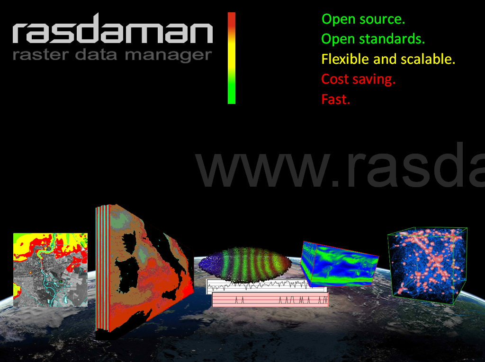

Rasdaman¶
Motor de Análisis de Big Data Multidimensional¶
Rasdaman es un sistema de base de datos matriz que proporciona geo servicios que proporciona servicios geográficos flexibles, rápidos y escalables para datos de sensor, imagen, simulación y estadísticas espacio-temporales multidimensionales de volumen ilimitado. El acceso , extracción y agregación ad-hoc, así como remixes y análisis se habilita a través de un lenguaje de consulta raster NewSQL con una optimización del lado del servidor altamente efectiva. Análisis, extracción, agregación, así como remix y ad-hoc acceso está habilitado a través de un lenguaje de consulta de trama NewSQL con optimización de servidor altamente eficaz. La paralelización de la nube/agrupación se acompleta de forma segura y controlada por el administrador.
Además del lenguaje de consulta de ráster, rasdaman soporta los servicios web estándar de OGC’s WMS, WCS y WCPS , así como las API de C++ y Java. En https://standards.rasdaman.com hay disponible una colección de demos interactivas. Un controlador de rasdaman es parte de GDAL y MapServer.
Rasdaman ha recibido una serie de premios internacionales a la innovación, entre ellos, el prestigioso European IT Prize and Geospatial Innovation Award. La tecnología es madura y estable, está en funcionamiento desde hace más de diez años. Entre los operadores de servicios rasdaman hay agencias de mapeo y centros de datos climáticos.
{kind=link}
Características Principales¶
verdaderamente multidimensional - 1-D, 2-D, 3-D, 4-D, y más allá
lenguaje de consulta potente y flexible para la visualización, clasificación, convolución, agregación y muchas más funciones geoespaciales
indexación espacial y mosaico adaptativo para acceso rápido a los datos
paralelización y «transmisión de mosaicos» para una escalabilidad ilimitada de laptop a agrupación y nube.
soporte para los estándares OGC relevantes para el ráster, Implementación de Referencia para WCS Core y WCPS
Estándares implementados¶
OGC WMS 1.3, WCS 2.0, WCPS 1.0
Detalles¶
Sitio web: https://rasdaman.org
Licencia:
clientes y APIs: GNU Lesser General Public licencia (LGPL) versión 3
motor del servidor: GNU General Public License (GPL) version 3
Versión de software: 10.0.0
Plataformas compatibles: GNU/Linux, Mac OSX, Solaris
Interfaces API: rasql, C++, Java
Soporte: https://rasdaman.com